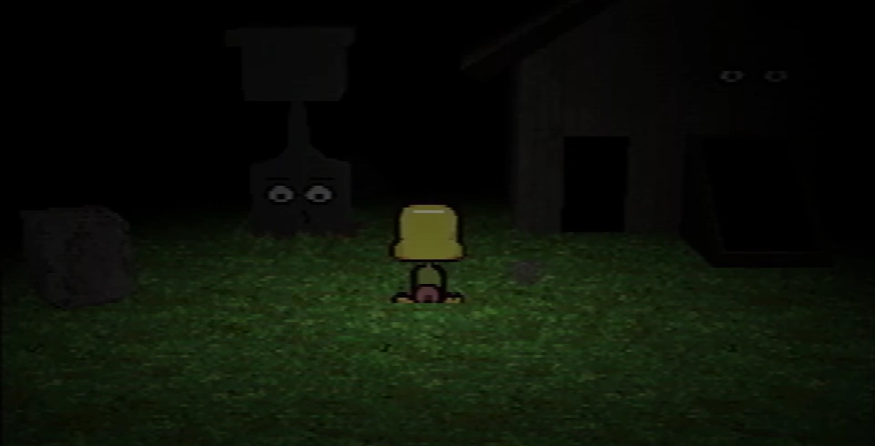

The grave room is an area under the Newmaker Plane.
The location can be accessed from the tunnel area. The main area is referred to as "grave" in the room list in Room Impulse, mainly named for Mike's grave that is prominently part of the room.
The grave can be interacted with to read an epitaph. Mike's grave reads:
Michael Hammond
1988 - 1995
Mike was a gift.
Multiple pieces can be collected in the room. The rest of the room has dirt walls, a fence, and rocks decorating it.
Next to Mike's grave, there is a shed with a basement. Care's face is on the shed.
The right-side stairs down into the lower floor can be used to turn into a shadow monster man by walking right when at the bottom.
On the ground floor (left side) of the shed, a large flower is seen which has broken through the floor. When Paul plucks the petals from this flower, the screen is tinted red every other petal. One of two sound effects are played, alternating every other petal as well.
The room also is decorated with various gardening tools and a box of crayons on a shelf, but these seem to be only decorative.
Walking downstairs (on the right side) enters the shed's basement. Here, Care can be seen in her "NLM" state. She appears to be directly below the flower, on a pedestal. Each time a petal is plucked from the flower on the above floor, the pedestal is lowered. After all petals are plucked, the pedestal is on the ground, but Care appears distorted and cannot be interacted with. After Paul changes the treadmill in Pen's room to -1, Care NLM returns to normal but while the pedestal remains lowered, and catch her similarly to the pets. After catching Care NLM, the lighting in the lower floor shifts to reveal a symbol block that was previously obscured in the darkness.
The flower may be connected to the Dr. Seuss story, Daisy-Head Mayzie. The alternation of tones when plucking the petals could reference the "loves me, loves me not" rhyme that is crucial to Daisy-Head Mayzie. The shed involves Care in her "NLM" ("nobody loves me") form; "nobody loves me" can be related to Daisy-Head Mayzie. When Paul plucks all the flowers from the daisy, the final petal lands on "loves me not", which may result in Care's distorted look being her reaction. Details can be read at the Daisy-Head Mayzie connections article.
| Gift Plane | Gift Plane · Even Care · Odd Care · Work Zone |
|---|---|
| Newmaker Plane | Newmaker Plane · Office · Grave room · Tool room · Quitter's Room · Child Library · Windmill · Party room · House · School |
{kind=link}
{kind=link}
{kind=link}
{kind=link}
{kind=link}
{kind=link}